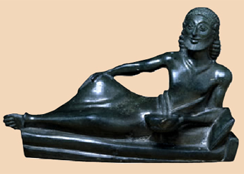

|

Spartan craftsmen produced beautiful bronze figures like this banqueter.
In the Sparta of the 5th century BC, it seems people believed that Sparta had always been an austere, military-minded city. However, we now know from archaeological evidence that in the centuries before 500 BC, Sparta had been quite different. Like other Greek cities, Sparta had traded widely to get luxury items and had been home to poets and craftsmen producing beautiful objects.
|